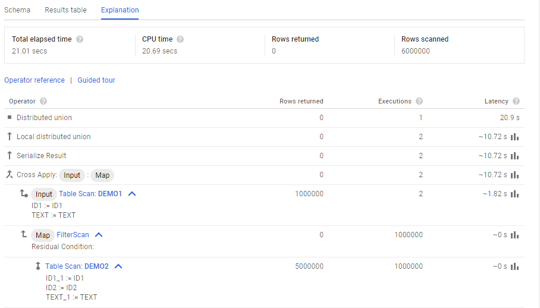
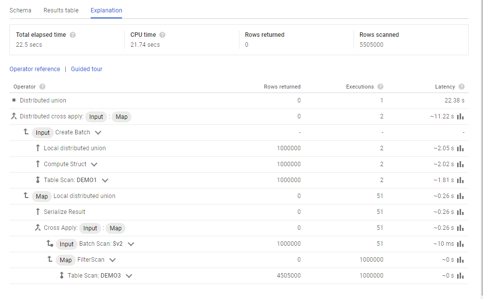

This was first published on https://www.dbi-services.com/blog/google-cloud-spanner-inserting-data/ (2018-07-19)
Republishing here for new followers. The content is related to the versions available at the publication date.
.
In a previous post I’ve created a Google Cloud Spanner database and inserted a few rows from the GUI. This is definitely not a solution fo many rows and here is a post about using the command line.
If I start the Google Shell from the icon on the Spanner page for my project, everything is set. But if I run it from elsewhere, using the https://console.cloud.google.com/cloudshell as I did in A free persistent Google Cloud service with Oracle XE I have to set the project:
franck_pachot@cloudshell:~$ gcloud config set project superb-avatar-210409
Updated property [core/project].
franck_pachot@superb-avatar-210409:~$
I create my Spanner instance with 3 nodes across the world:
¨
franck_pachot@superb-avatar-210409:~$ time gcloud spanner instances create franck --config nam-eur-asia1 --nodes=3 --description Franck
Creating instance...done.
real 0m3.940s
user 0m0.344s
sys 0m0.092s
and Spanner database – created in 6 seconds:
franck_pachot@superb-avatar-210409:~$ time gcloud spanner databases create test --instance=franck
Creating database...done.
&nbssp;
real 0m6.832s
user 0m0.320s
sys 0m0.128s
The DDL for table creation can also be run from there:
franck_pachot@superb-avatar-210409:~$ gcloud spanner databases ddl update test --instance=franck --ddl='create table DEMO1 ( ID1 int64, TEXT string(max) ) primary key (ID1)'
DDL updating...done.
'@type': type.googleapis.com/google.protobuf.Empty
I’m now ready to insert one million rows. Here is my table:
franck_pachot@superb-avatar-210409:~$ gcloud spanner databases ddl describe test --instance=franck
--- |-
CREATE TABLE DEMO1 (
ID1 INT64,
TEXT STRING(MAX),
) PRIMARY KEY(ID1)
The gcloud command line has a limited insert possibility:
franck_pachot@superb-avatar-210409:~$ time for i in $(seq 1 1000000) ; do gcloud beta spanner rows insert --table=DEMO1 --database=test --instance=franck --data=ID1=${i},TEXT=XXX${i} ; done
commitTimestamp: '2018-07-18T11:09:45.065684Z'
commitTimestamp: '2018-07-18T11:09:50.433133Z'
commitTimestamp: '2018-07-18T11:09:55.752857Z'
commitTimestamp: '2018-07-18T11:10:01.044531Z'
commitTimestamp: '2018-07-18T11:10:06.285764Z'
commitTimestamp: '2018-07-18T11:10:11.106936Z'
^C
Ok, let’s stop there. Calling a service for each row is not efficient with a latency of 5 seconds.
I’ll use the API from Python. Basically, a connection is a Spanner Client:
franck_pachot@superb-avatar-210409:~$ python3
Python 3.5.3 (default, Jan 19 2017, 14:11:04)
[GCC 6.3.0 20170118] on linux
Type "help", "copyright", "credits" or "license" for more information.
>>> from google.cloud import spanner
>>> spanner_client = spanner.Client()
>>> instance = spanner_client.instance('franck')
>>> database = instance.database('test')
>>>
With this I can send a batch of rows to insert. Here is the full Python script I used to insert one million, by batch of 1000 rows:
from google.cloud import spanner
spanner_client = spanner.Client()
instance = spanner_client.instance('franck')
database = instance.database('test')
for j in range(1000):
records=[]
for i in range(1000):
records.append((1+j*1000+i,u'XXX'+str(i)))
with database.batch() as batch:
batch.insert(table='DEMO1',columns=('ID1', 'TEXT',),values=records)
This takes 2 minutes:
franck_pachot@superb-avatar-210409:~$ time python3 test.py
real 2m52.707s
user 0m21.776s
sys 0m0.668s
franck_pachot@superb-avatar-210409:~$
If you remember my list of blogs on Variations on 1M rows insert that’s not so fast. But remember that rows are distributed across 3 nodes in 3 continents but here inserting with constantly increasing value have all batched rows going to the same node. The PRIMARY KEY in Google Spanner is not only there to declare a constraint but also determines the organization of data.
The select can also be run from there from a read-only transaction called ‘Snapshot’ because it is doing MVCC consistent reads:
frank_pachot@superb-avatar-210409:~$ python3
Python 3.5.3 (default, Jan 19 2017, 14:11:04)
[GCC 6.3.0 20170118] on linux
Type "help", "copyright", "credits" or "license" for more information.
>>> from google.cloud import spanner
>>> with spanner.Client().instance('franck').database('test').snapshot() as snapshot:
... results = snapshot.execute_sql('SELECT COUNT(*) FROM DEMO1')
... for row in results:
... print(row)
...
[1000000]
The advantage of the read-only transaction is that it can do consistent reads without locking. The queries executed in a read-write transaction have to acquire some locks in order to guarantee consistency when reading across multiple nodes.
So, you can look at the PRIMARY KEY as a partition by range, and we have also reference partitioning with INTERLEAVE IN PARENT. This reminds me of the Oracle CLUSTER segment that is so rarely used because storing the tables separately is finally the better compromise on performance and flexibility for a multi-purpose database.
Here is my creation of DEMO2 where ID1 is a foreign key referencing DEMO1
franck_pachot@superb-avatar-210409:~$ time gcloud spanner databases ddl update test --instance=franck --ddl='create table DEMO2 ( ID1 int64, ID2 int64, TEXT string(max) ) primary key (ID1,ID2), interleave in parent DEMO1 on delete cascade'
DDL updating...done.
'@type': type.googleapis.com/google.protobuf.Empty
real 0m24.418s
user 0m0.356s
sys 0m0.088s
I’m now inserting 5 detail rows per each parent row:
from google.cloud import spanner
database = spanner.Client().instance('franck').database('test')
for j in range(1000):
records=[]
for i in range(1000):
for k in range(5):
records.append((1+j*1000+i,k,u'XXX'+str(i)+' '+str(k)))
with database.batch() as batch:
batch.insert(table='DEMO2',columns=('ID1','ID2','TEXT'),values=records)
This ran in 6 minutes.
Here is the execution plan for
SELECT * FROM DEMO1 join DEMO2 using(ID1) where DEMO2.TEXT=DEMO1.TEXT
where I join the two tables and apply a filter on the join: 
Thanks to the INTERLEAVE the join is running locally. Each row from DEMO1 (the Input of the Cross Apply) is joined with DEMO2 (the Map of Cross Apply) locally. Only the result is serialized. On this small number of rows we do not see the benefit from having the rows in multiple nodes. There are only 2 nodes with rows here (2 local executions) and probably one node contains most of the rows. The average time per node is 10.72 seconds and the elapsed time is 20.9 seconds, so I guess that one node ran un 20.9 seconds and the other in 1.35 only.
The same without the tables interleaved (here as DEMO3) is faster to insert but the join will be more complex where DEMO1 must be distributed to all nodes. 
Without interleave, the input table of the local Cross Apply is a Batch Scan, which is actually like a temporary table distributed to all nodes (seems to have 51 chunks here), created by the ‘Create Batch’. This is called Distributed Cross Applied.
Google Spanner has only some aspects of SQL and Relational databases. But it is still, like the NoSQL databases, a database where the data model is focused at one use case only because the data model and the data organization have to be designed for specific data access.
{kind=link}
{kind=link}